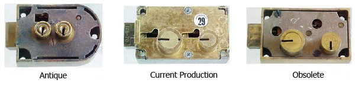
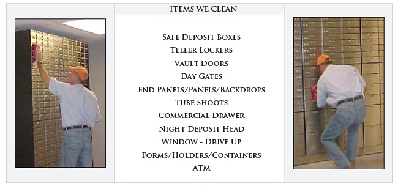
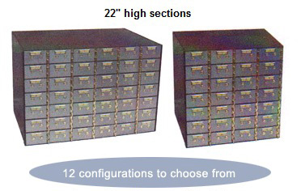
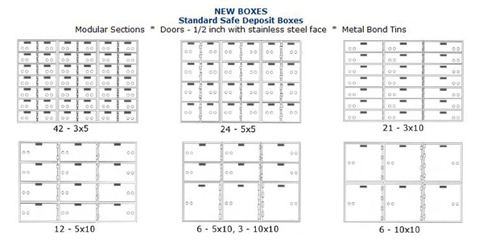

We offer a wide range of services. Below you will find information about our lockwork services, mail-in lockwork, equipment cleaning, safe deposit box sales and safe deposit box relocation. We welcome you to browse the information and contact us should you have any questions.
AdvanceTec offers our professional ON SITE lock work services.
Our technicians are exceptional in their lockwork technique and combined they have drilled over 25,000 boxes and have rotated over 250,000 locks. AdvanceTec Safe Deposit Services Inc. is able to repair and save locks that other companies would destroy and are unable to replace. Because we are strictly safe deposit specialists, our technicians are very efficient and are able to complete a job in far less time than is customary throughout the industry. Our technicians are usually able to drill open a safe deposit box in under 5 minutes. Please call for service area availability or click the map to the left.
Our mail-in safe deposit lockwork service is offered to financial organizations and bank equipment service companies outside the state of Texas.
Need a replacement lock?
Need a key blank? Need a key made?
Key Duplication ~ Lock Repairs
Lock Rekeying ~ Replacement Locks
Don't know the make or model of your safe deposit locks? Just email a picture of your lock for proper identification. A prompt turn-around time is our goal!
Please call ahead for service and price quote (888) 231-0745.
Lockwork shipping address:
AdvanceTec Safe Deposit Services, Inc.
2554 MacArthur View
San Antonio, TX 78217
AdvanceTec offers professional bank equipment cleaning service. It is recommended that safe deposit boxes, vault doors and motor bank equipment be cleaned one or more times a year, not only for the appearance to your customer but also due to the fact that dirt and grime can shorten the life expectancy of your valuable equipment. Click map to view service area.
Our Stainless Steel Safe Deposit Boxes incorporate the most desired features in today's marketplace. They are produced to exacting standards combining quality, craftsmanship and advanced materials. This combination along with our commitment to excellence results in the premier security storage system available today.
 Custom Sections * Doors – 1/2 inch (Aluminum or Polished steel) * Metal Bond Tins
A possible consideration when matching the appearance of older existing boxes within a vault is desired. All Sections are custom made to specifics.
We sell only safe deposit boxes that are MADE IN AMERICA.
How to organize your safe deposit area